4410OA CHECKING CORRECT TIGHTENING OF FRONT SUSPENSION
- Path
- Test > 44 SUSPENSION AND WHEELS > 4410 FRONT SUSPENSION > 4410O FRONT SUSPENSION TESTS > 4410OA CHECKING CORRECT TIGHTENING OF FRONT SUSPENSION
- Kind
- test / check procedure
- Applies to
- all engines; all production periods
- Interactive page
- https://sloeber94.github.io/elrnDB-fCrm/en/#/194002287
Applies to: all engines; all production periods
Position the vehicle on a two column lift.
Using a torque wrench set to the recommended value, check that the shock absorber is tightened to the mounting (1) to the recommended torque.
Type of fastening | Component | Torque (daNm) | |
|---|---|---|---|
1 | Nut M12X1.5 | Upper Turret | 10 |
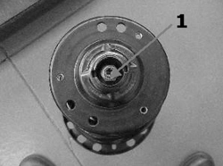
Applies to: all engines; all production periods
Visually inspect that the yield point type bolts fastening the turret mounting to the bodywork (2) have not loosened.
Type of fastening | Component | Torque (daNm) + Angle (°) | |
|---|---|---|---|
2 | Nut M8 | Upper turret | 2 + 45° |
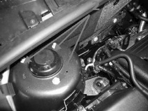
Applies to: all engines; all production periods
Raise the vehicle and check that the front suspension fastenings are correctly tightened.
Visually inspect that the yield point type bolts fastening the shock absorber to the steering knuckle (3) have not loosened.
Type of fastening | Component | Torque (daNm) + Angle (°) | |
|---|---|---|---|
3 | Nut M12X1.5 | Shock absorber mounting | 8,5 + 75° |
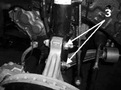
Applies to: all engines; all production periods
Visually inspect that the yield point type bolts fastening the steering box to the frame (4) have not loosened.
Type of fastening | Component | Torque (daNm) + Angle (°) | |
|---|---|---|---|
4 | Nut M12X1.25 | Chassis | 4,5 + 45° |
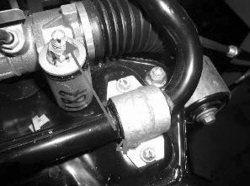
Applies to: all engines; all production periods
Using a torque wrench calibrated to the recommended value, check that the fastening between the steering box and the steering knuckle (5) is tightened to the recommended torque.
Type of fastening | Component | Torque (daNm) | |
|---|---|---|---|
5 | Nut M12X1.5 | Steering knuckle | 3,5 |
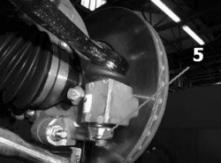
Applies to: all engines; all production periods
Using a torque wrench calibrated to the recommended value, check that the fastenings securing the anti-roll bar to the frame (6) are tightened to the recommended torque.
Type of fastening | Component | Torque (daNm) | |
|---|---|---|---|
6 | Bolt M8 | Chassis | 2 |
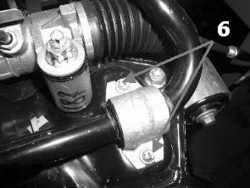
Applies to: all engines; all production periods
Using a torque wrench calibrated to the recommended value, check that the fastenings securing the connecting rod to the bar (7a) and to the shock absorber (7b) are tightened to the recommended torque.
Type of fastening | Component | Torque (daNm) | |
|---|---|---|---|
7a | Nut M12X1.5 | Anti-roll bar | 6,5 |
7b | Nut M12X1.5 | Shock absorber | 6,5 |
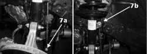
Applies to: all engines; all production periods
Visually inspect that the yield point type bolts for the front fastening between the frame and the bodyshell (8a) and the rear fastening between the frame and the bodyshell (8b) have not loosened.
Type of fastening | Component | Torque (daNm) + Angle (°) | |
|---|---|---|---|
8a | Bolt M12 | Front fastening on bodyshell | 10 + 90° |
8b | Bolt M12 | Rear fastening on bodyshell | 10 + 90° |
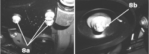
Applies to: all engines; all production periods
Visually inspect that the yield point type bolts for the bracket (frame to bodywork) securing the frame to the bodyshell on the outer side (9a) and the bracket (frame attachment to bodywork) securing the frame to the bodyshell on the inner side (9b) have not loosened.
Type of fastening | Component | Torque (daNm) + Angle (°) | |
|---|---|---|---|
9a | Bolt M12 | Bodyshell outer side | 9 + 45° |
9b | Bolt M12 | Bodyshell inner side | 9 + 45° |
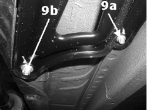
Applies to: all engines; all production periods
Visually inspect that the yield point type bolts on the fastening for the track control arm front mounting to the steering knuckle (10a), on the fastening for the rear attachment for the track control arm to the frame (10b), on the fastening for the track control arm to the bush (10c) and on the fastening for the track control arm to the steering knuckle (10d) have not loosened.
Type of fastening | Component | Torque (daNm) + Angle (°) | |
|---|---|---|---|
10a | Bolt M10X1.25 | Front on frame | 9 + 75° |
10b | Bolt M12X1.5 | Rear on frame | 9 + 75° |
10c | Bolt M10 | Bush on arm | 4 + 40° |
10d | Nut M10 | Steering knuckle | 3 + 60° |
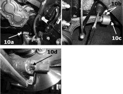
Applies to: all engines; all production periods
Using a torque wrench calibrated to the recommended value, check that the bolt fixing the front connecting rod to the frame (11) is tightened to the recommended torque.
Type of fastening | Component | Torque (daNm) | |
|---|---|---|---|
11 | Bolt M12 | Chassis | 8 |
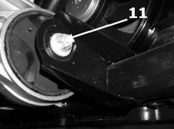
Applies to: all engines; all production periods
Using a torque wrench calibrated to the recommended value, check that the bolt fixing the front brake caliper to the steering knuckle (12) is tightened to the recommended torque.
Type of fastening | Component | Torque (daNm) | |
|---|---|---|---|
12 | Bolt M14X2 | Steering knuckle | 23 |
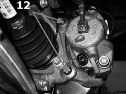